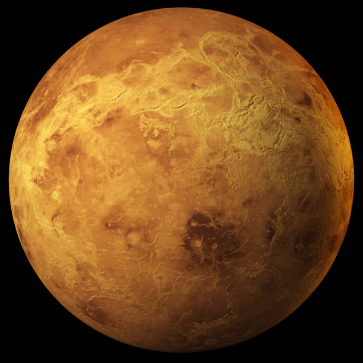
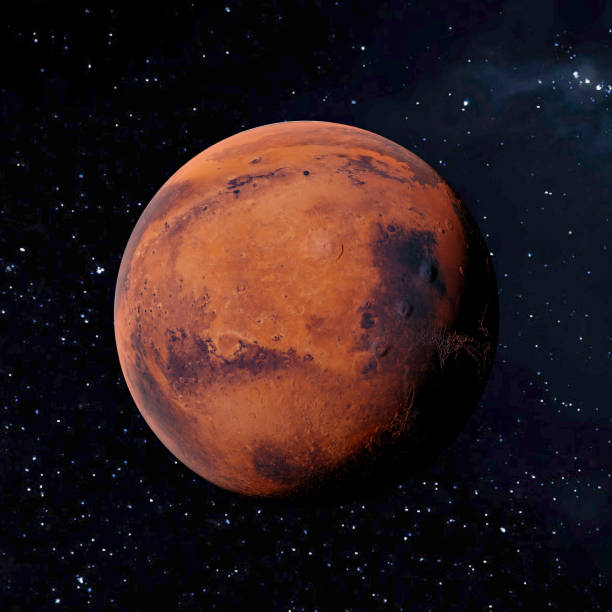
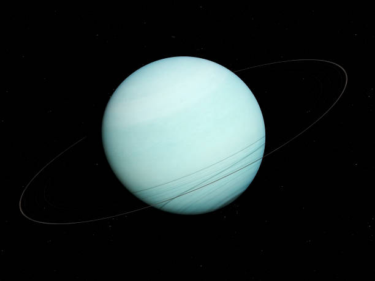

Mercúrio
Mercúrio é o planeta mais próximo do Sol e o menor do Sistema Solar. Tem uma superfície rochosa cheia de crateras, semelhante à Lua. Devido à sua proximidade com o Sol, Mercúrio experimenta temperaturas extremamente altas durante o dia e muito frias à noite. Não possui atmosfera significativa, o que contribui para essas variações extremas de temperatura.

Vênus
Vênus é o segundo planeta a partir do Sol e é semelhante à Terra em tamanho e composição. No entanto, possui uma atmosfera densa e rica em dióxido de carbono, o que cria um efeito estufa extremo, tornando-o o planeta mais quente do Sistema Solar. Sua superfície é coberta por nuvens espessas de ácido sulfúrico, e a pressão atmosférica em sua superfície é esmagadora.

Terra
A Terra é o terceiro planeta a partir do Sol e o único conhecido por abrigar vida. Possui uma atmosfera rica em oxigênio, água em estado líquido e uma biosfera diversificada. A Terra tem uma superfície composta de continentes e oceanos, e sua atmosfera protege o planeta de radiações prejudiciais do espaço. A presença de uma única lua influencia as marés e estabiliza a inclinação axial da Terra.

Marte
Marte, o quarto planeta a partir do Sol, é conhecido como o "Planeta Vermelho" devido à sua superfície rica em óxido de ferro. Possui uma atmosfera fina composta principalmente de dióxido de carbono. Marte apresenta sinais de antigos rios e lagos, sugerindo que já teve água em estado líquido. O planeta tem duas pequenas luas, Fobos e Deimos.

Júpiter
Júpiter é o maior planeta do Sistema Solar e o quinto a partir do Sol. É um gigante gasoso composto principalmente de hidrogênio e hélio, sem uma superfície sólida definida. Júpiter possui uma Grande Mancha Vermelha, uma tempestade gigante que dura há séculos. O planeta tem um extenso sistema de anéis e mais de 75 luas, incluindo as maiores, conhecidas como luas galileanas: Io, Europa, Ganimedes e Calisto.

Saturno
Saturno, o sexto planeta do Sol, é famoso por seu sistema de anéis espetaculares, compostos de gelo e rochas. Assim como Júpiter, Saturno é um gigante gasoso composto principalmente de hidrogênio e hélio. Ele possui mais de 80 luas, sendo Titã a maior e uma das mais interessantes, pois tem uma atmosfera espessa e lagos de metano líquido.

Urano
Urano é o sétimo planeta a partir do Sol e o primeiro a ser descoberto com o auxílio de um telescópio. É um gigante gasoso, mas com uma composição diferente de Júpiter e Saturno, contendo mais gelo, como água, amônia e metano. Urano é peculiar por girar de lado, com um eixo de rotação quase perpendicular ao plano da sua órbita. Também possui um sistema de anéis e 27 luas conhecidas.
Netuno
Netuno, o oitavo e mais distante planeta do Sol, é similar a Urano em composição e também é classificado como um gigante gasoso. Possui ventos extremamente fortes e tempestades gigantescas, como a Grande Mancha Escura, similar à de Júpiter. Netuno tem um sistema de anéis tênues e 14 luas conhecidas, sendo Tritão a maior e mais interessante, pois possui gêiseres de nitrogênio ativo.